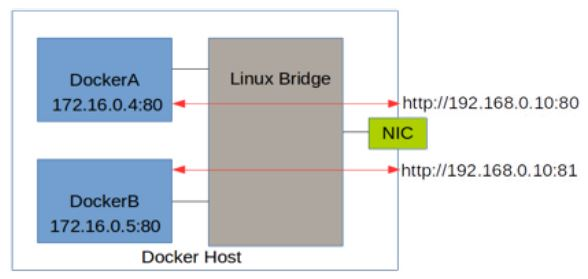
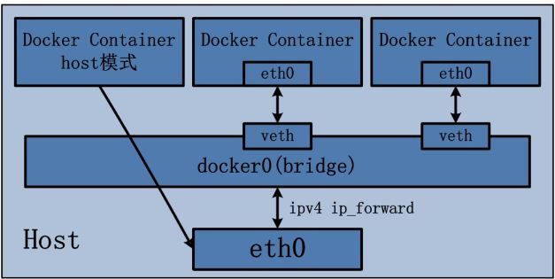
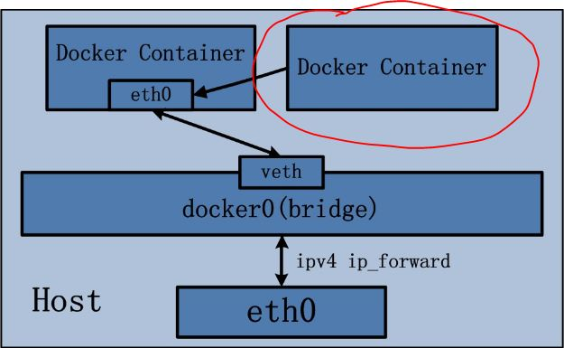
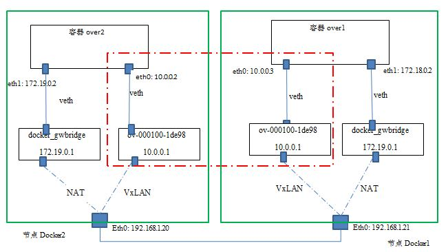
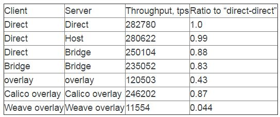

docker网络
目录

图1 docker network
四种单节点网络模式
bridge 模式
Docker 容器默认使用 bridge 模式的网络。其特点如下：
- 使用一个 linux bridge，默认为 docker0
- 使用 veth 对，一头在容器的网络 namespace 中，一头在 docker0 上
- 该模式下 Docker Container 不具有一个公有 IP，因为宿主机的 IP 地址与 veth pair 的 IP 地址不在同一个网段内
- Docker 采用 NAT 方式，将容器内部的服务监听的端口与宿主机的某一个端口 port 进行“绑定”，使得宿主机以外的世界可以主动将网络报文发送至容器内部
- 外界访问容器内的服务时，需要访问宿主机的 IP 以及宿主机的端口 port
- NAT 模式由于是在三层网络上的实现手段，故肯定会影响网络的传输效率。
- 容器拥有独立、隔离的网络栈；让容器和宿主机以外的世界通过 NAT 建立通信
iptables 的 SNTA 规则，使得从容器离开去外界的网络包的源 IP 地址被转换为 Docker 主机的 IP 地址：
Chain POSTROUTING (policy ACCEPT)
target prot opt source destination
MASQUERADE all -- 172.17.0.0/16 0.0.0.0/0
MASQUERADE all -- 172.18.0.0/16 0.0.0.0/0
效果是这样的：

图2 bridge
示意图：

图3 bridge_network
Host 模式
Host 模式并没有为容器创建一个隔离的网络环境。 而之所以称之为 host 模式，是因为该模式下的 Docker 容器会和 host 宿主机共享同一个网络 namespace，故 Docker Container 可以和宿主机一样，使用宿主机的 eth0，实现和外界的通信。 换言之，Docker Container 的 IP 地址即为宿主机 eth0 的 IP 地址。其特点包括：
- 这种模式下的容器没有隔离的 network namespace
- 容器的 IP 地址同 Docker host 的 IP 地址
- 需要注意容器中服务的端口号不能与 Docker host 上已经使用的端口号相冲突
- host 模式能够和其它模式共存
示意图：

图4 host_network
container 模式
Container 网络模式是 Docker 中一种较为特别的网络的模式。 处于这个模式下的 Docker 容器会共享其他容器的网络环境，因此，至少这两个容器之间不存在网络隔离，而这两个容器又与宿主机以及除此之外其他的容器存在网络隔离。
注意：因为此时两个容器要共享一个 network namespace，因此需要注意端口冲突情况，否则第二个容器将无法被启动。
示意图：

图5 container_network
none 模式
网络模式为 none，即不为 Docker 容器构造任何网络环境。 一旦 Docker 容器采用了 none 网络模式，那么容器内部就只能使用 loopback 网络设备，不会再有其他的网络资源。 Docker Container 的 none 网络模式意味着不给该容器创建任何网络环境，容器只能使用 127.0.0.1 的本机网络。
多节点 Docker 网络
Docker 多节点网络模式可以分为两类，一类是 Docker 在 1.19 版本中引入的基于 VxLAN 的对跨节点网络的原生支持； 另一种是通过插件（plugin）方式引入的第三方实现方案，比如 Flannel，Calico 等等。
Docker 原生 overlay 网络
Docker 1.19 版本中增加了对 overlay 网络的原生支持。 Docker 支持 Consul, Etcd, 和 ZooKeeper 三种分布式 key-value 存储。 其中，etcd 是一个高可用的分布式 k/v 存储系统，使用 etcd 的场景默认处理的数据都是控制数据，对于应用数据，只推荐数据量很小，但是更新访问频繁的情况。
网络拓扑图：

图6 overlay_network
可见：
- Docker 在每个节点上创建了两个 linux bridge，一个用于 overlay 网络（ov-000100-1de98），一个用于非 overlay 的 NAT 网络（docker_gwbridge）
- 容器内的到 overlay 网络的其它容器的网络流量走 overlay 网卡（eth0），其它网络流量走 NAT 网卡（eth1）
- 当前 Docker 创建 vxlan 隧道的 ID 范围为 256～1000，因而最多可以创建 745 个网络，因此，本例中的这个 vxlan 隧道使用的 ID 是 256
- Docker vxlan 驱动使用 4789 UDP 端口
- overlay 网络模型底层需要类似 consul 或 etcd 的 KV 存储系统进行消息同步
- Docker overlay 不使用多播
- Overlay 网络中的容器处于一个虚拟的大二层网络中
网络性能对比
个人测试
使用 iperf 测试：
| 类型 | TCP | UDP |
|---|---|---|
| Overlay 网络中的两个容器之间 (A) | 913 Mbits/sec | 1.05 Mbits/sec |
| Bridge/NAT 网络中的两个容器之间 (B) | 1.73 Gbits/sec | |
| 主机间 (C) | 2.06 Gbits/sec | 1.05 Mbits/sec |
| 主机到另一个主机上的 bridge 网络模式的容器 (D) | 1.88 Gbits/sec | |
| 主机到本主机上的容器 (E) | 20.5 Gbits/sec | |
| 主机到另一个主机上的 host 网络模式的容器 (F) | 2.02 Gbits/sec | 1.05 Mbits/sec |
| 容器 Overlay 效率 (A/C) | 44% | 100% ? |
| 单个 NAT 效率 (D/C) | 91% | |
| 两个 NAT 效率 (B/C) | 83% | |
| Host 网络模式效率 (F/C) | 98% | 100% |
网络文章的对比数据

图7 perf_network
关于 Docker 网络模式选择的简单结论
- Bridge 模式的性能损耗大概为 10%
- 原生 overlay 模式的性能损耗非常高，甚至达到了 56%，因此，在生产环境下使用这种模式需要非常谨慎。
- 如果一定要使用 overlay 模式的话，可以考虑使用 Cisco 发起的 Calico 模式，它的性能和 bridge 相当。
- Weave overlay 模式的性能数据非常可疑，按理说应该不可能这么差。